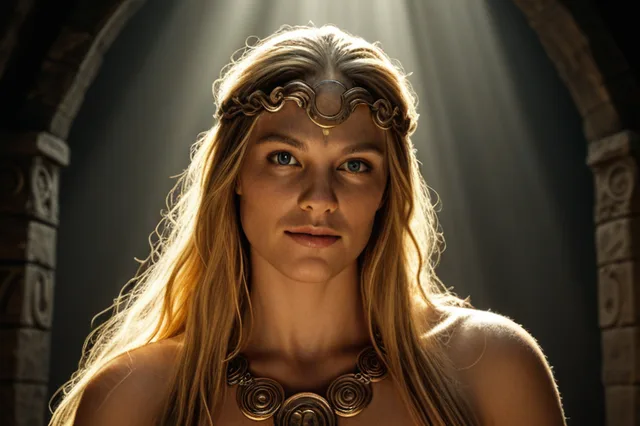

Нот
Нот (Nótt) — Ночь, едет на коне Хряпифиллире
Nótt
Нот ("Ночь") — богиня ночи, дочь великана Норви. Ездит на коне Хрингхорни по небу, принося темноту. Её сын — Dagr (День), рождённый от Дьюравинга.
Происхождение: Йотунхейм, дочь Норви
Германическое имя: Naxþaz
Роль: богиня Ночи
Семья
Легенды
- Каждый день Нот объезжает небо на коне Хрингхорни
- За Нот следует её сын Dagr (День)
- Нот олицетворяет темноту и покой ночи
Источники
Прозаическая Эдда, Гюльвагиннинг
ᚱ